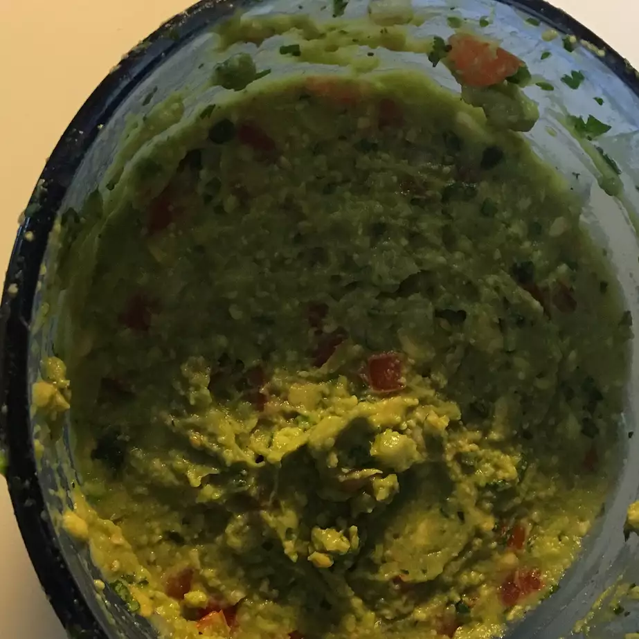

Traditional Mexican Guacamole

Per Serving:
177 calories; protein 2.7g; carbohydrates 12.2g; fat 14.9g; sodium 49.9mg.
Ingredients
- 2 avocados, peeled and pitted
- 1 cup chopped tomatoes
- ¼ cup chopped onion
- ¼ cup chopped cilantro
- ¼ cup chopped cilantro
- 1 jalapeno pepper, seeded and minced (Optional)
- salt and ground black pepper to taste
Directions
- Mash avocados in a bowl until creamy.
- Mix tomatoes, onion, cilantro, lemon juice, and jalapeno pepper into mashed avocado until well combined; season with salt and black pepper.